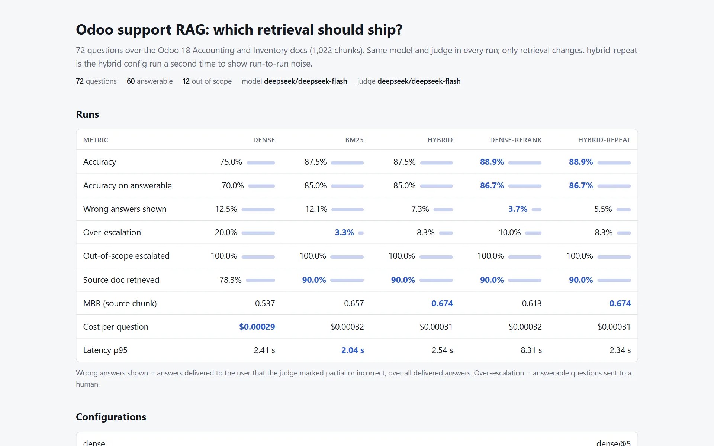

rag-eval-bench
Un banco de pruebas que decide si un cambio a un RAG sale a producción: un golden set con preguntas que la documentación no responde, un juez LLM, un validador que detecta citas y números inventados y una prueba de McNemar pareada detrás de una compuerta en CI. Corre sobre la documentación pública de Odoo 18.
Lo que encontró: la búsqueda híbrida le ganó a la densa por 12,5 puntos (p = 0,02). Con un juez de otra familia de modelos la ganancia baja a 9,7 puntos y deja de ser significativa. Un reranker no sumó nada y subió la latencia p95 de 2,5 s a 8,3 s, así que no sale.
A diferencia de producción, el juez principal es el mismo modelo que responde, y el golden set lo redactó un modelo y todavía no lo revisa una persona. El README declara ambos límites. Producción sí usa un reranker, sobre otro corpus: manuales en español con páginas escaneadas. Lo que muestra el bench es que esa decisión se mide en cada corpus.